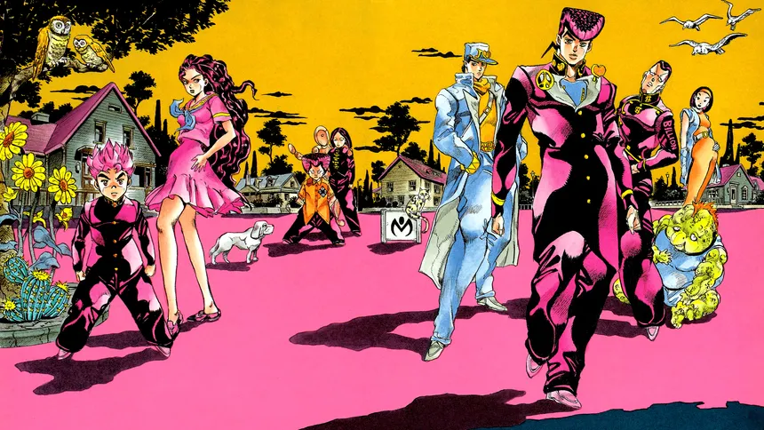

Nosotros
Conoce a nuestro equipo
- Josuke Higashikata: Socio fundador. Especialista en Derecho Penal.
- Koichi Hirose: Abogado asociado. Especialista en Derecho Civil.
- Okuyasu Nijimura: Abogado colaborador. Especialista en Derecho Laboral.
Historia del Bufete
Desde el año 1999, Abogados Morioh ha sido referente en servicios legales integrales, con un enfoque ético, profesional y humano para cada uno de nuestros clientes.

Contacto Directo
Dirección: Av. Grand 428, Morioh
Teléfono: (123) 456-7890
Email: contacto@abogadosmorioh.com